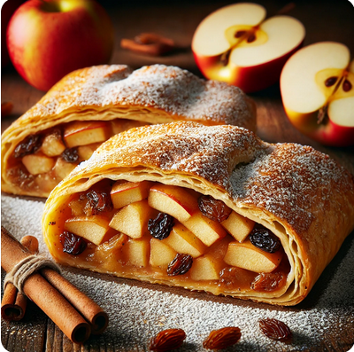

Cihans Kitchen
Apfelstrudel

Zutaten
Für den Teig:
Für die Füllung:
4-5 Äpfel (am besten säuerlich)
50 g Walnüsse oder Haselnüsse (optional, gehackt)
2 Esslöffel Semmelbrösel (für den Boden)
Für die Oberseite:
1 Eigelb (für die Oberseite)
Zubereitung
-
Teig zubereiten: Das Mehl in eine Schüssel geben, Salz, Ei, Essig
und Wasser hinzufügen. Nach und nach kneten, bis ein glatter Teig
entsteht. Den Teig in Frischhaltefolie wickeln und 30 Minuten ruhen
lassen.
-
Füllung zubereiten: Äpfel schälen und in Scheiben schneiden.
Zitronensaft, Zucker, Zimt, Walnüsse und Rosinen hinzufügen und gut
vermischen.
-
Teig ausrollen: Den ruhenden Teig auf einer bemehlten Fläche sehr
dünn ausrollen. Je dünner, desto besser.
-
Strudel formen: Semmelbrösel gleichmäßig auf den Teig streuen. Dann
die Apfelfüllung in die Mitte des Teigs legen. Die Ränder des Teigs
einklappen und vorsichtig zu einer Rolle aufwickeln. Die Rolle auf
ein mit Backpapier belegtes Blech legen.
-
Backen: Den Strudel im vorgeheizten Backofen bei 180°C ca. 30-40
Minuten backen. Optional das Eigelb auf die Oberseite streichen und
Zucker darüber streuen.
-
Servieren: Den Strudel etwas abkühlen lassen. Er kann warm oder kalt
serviert werden. Puderzucker darüber zu streuen, gibt eine schöne
Note.
- Guten Appetit!